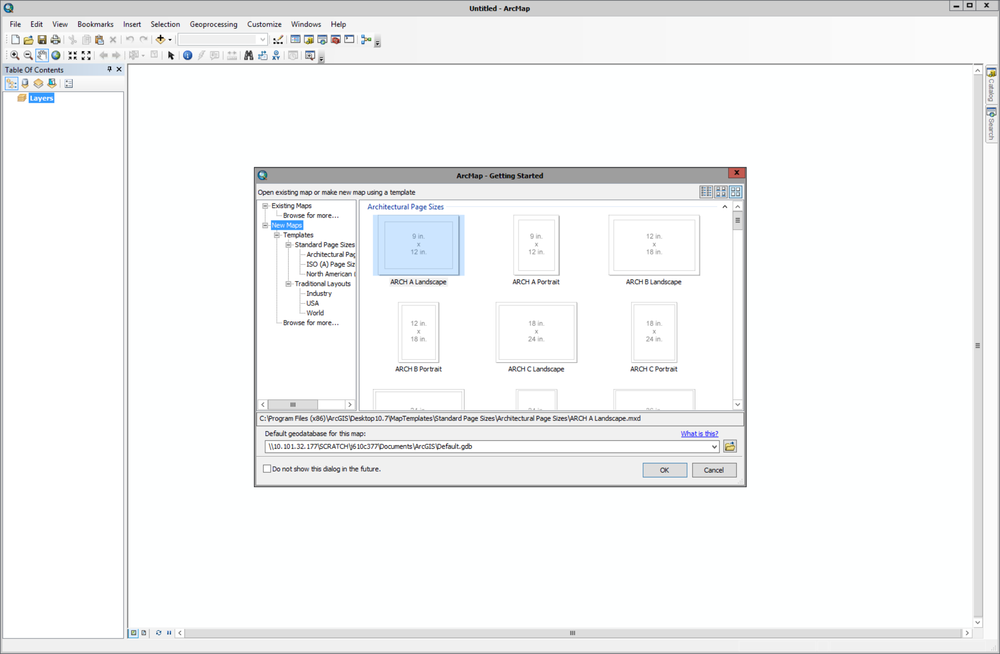
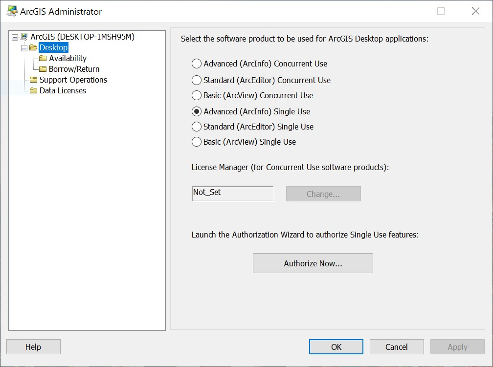
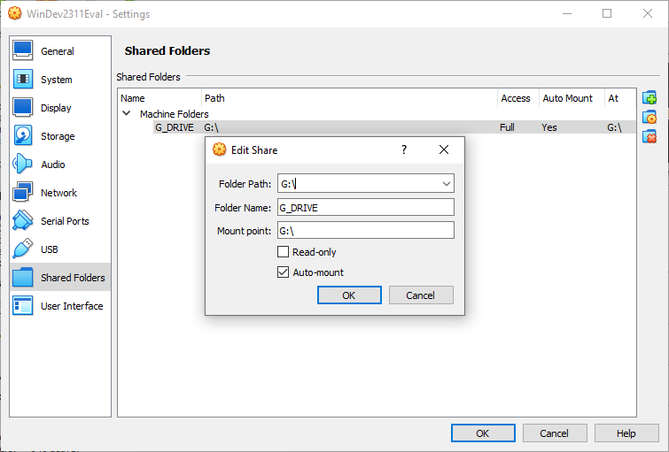
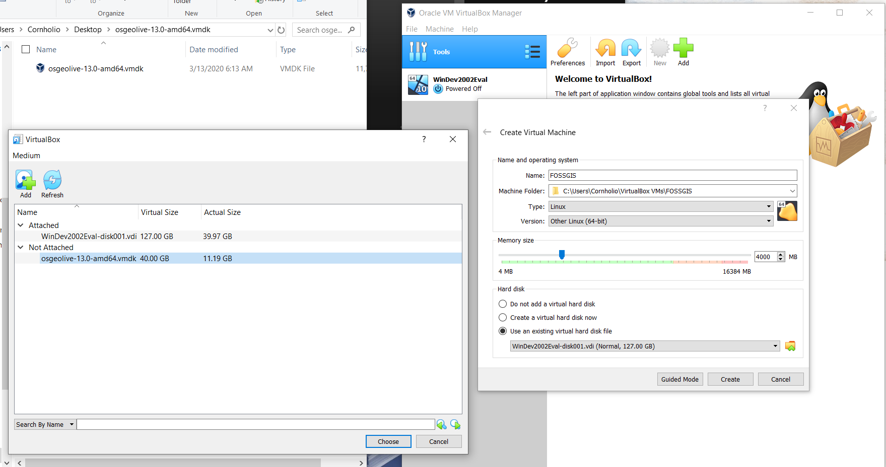
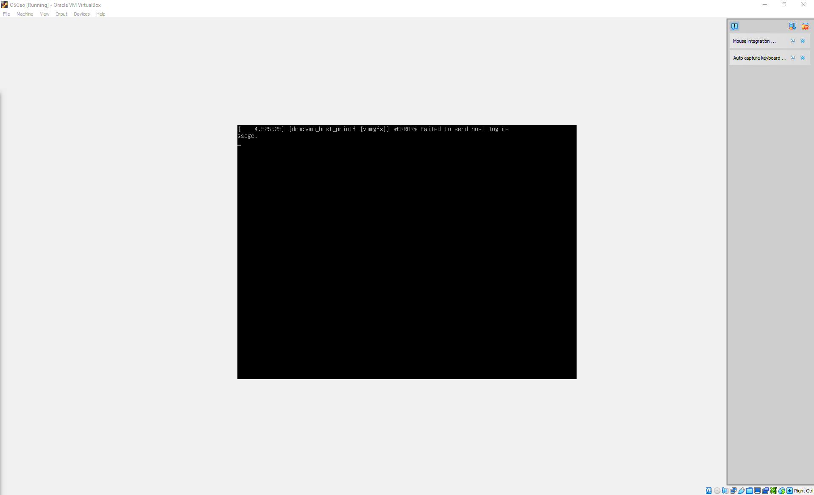
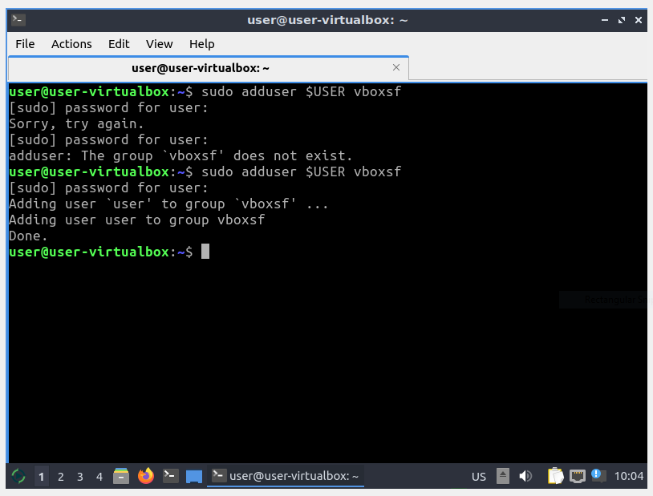
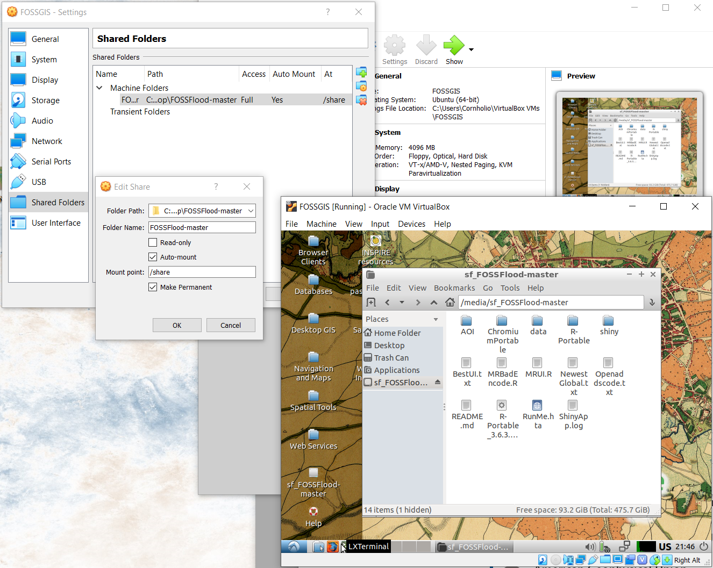
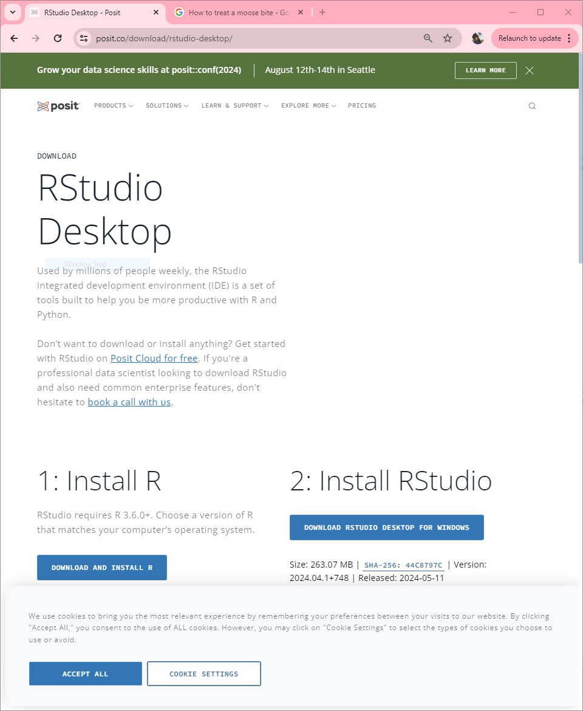
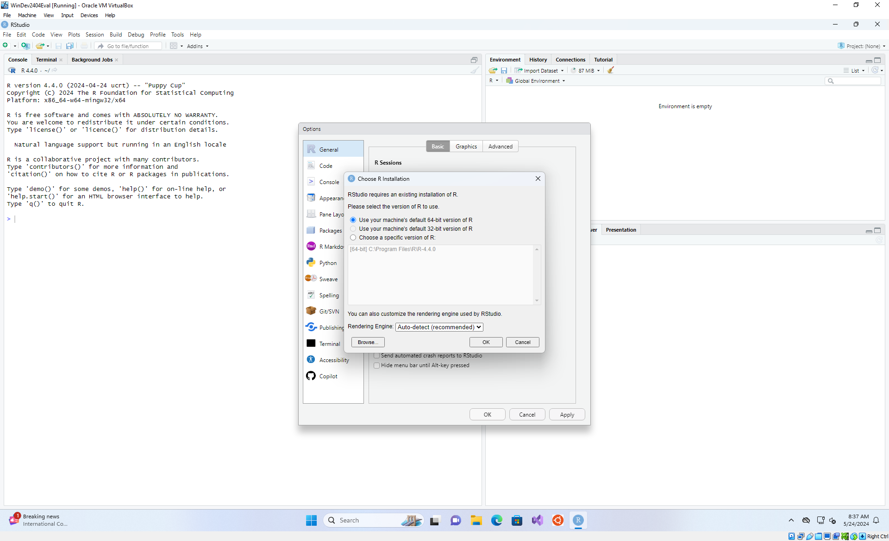

Installing GIS
GISoftware comes in many forms and flavors, and one of the largest hurdles a new user might experience is actually getting an application to work. However, repetition and “practice like you play” would suggest that using GIS (or really any skill you are trying to pick up) at least twice a week greatly improves the time to learn, and the easiest way to do so is to have that tool readily available to you. Here I’ll walk through the ways to install and set up some of the most common software tools I use and my workflow. This page is primarily for local installs, but when you want to get fancier and can leave the GUI driven world, computing through docker is how I run most of my larger workflows. See how I build my PC for parts lists and how I set up my physical space.
Google Earth Pro
The Google Earth pro landing page walks through a few of the different utilities you might want to install. If you are at this stage,the Desktop version is the one we are after. All you need to do to get started is to download and run the executable.
Google Earth Engine
This cloud based system requires only a Google account, sign up for it at https://developers.google.com/earth-engine/guides/access, and because this is an entire system accessed remotely though your browser, there’s nothing to install other than that browser: Google Chrome
ArcMap/ArcPro
The ESRI suite of products tends to be a demanding set of programs, so you should have a fairly modern computer if you want to install them for yourself. The ArcGIS system requirements can be found here. I also recommend at least 64 gigs of free hard drive space at minimum. In addition to the hardware requirements, ArcGIS also requires the Windows operating system. Below find installation instructions for different platforms.
The Virtual option is by far the easiest option if you are a recently virtualized member of the KU community. The QGIS virtual option is what I use when I’m not wed to ArcMap.
Before you install ArcGIS for Desktop
- To install ArcMap on windows, check the system requirements to make sure your computer has the hardware and software required. You should also close any other open programs or windows.
Download and install ArcGIS for Desktop Student Trial
- If necessary, download the ArcGIS Uninstall Utility and uninstall previous versions of ArcGIS Desktop or Server. The software cannot be installed on a computer that has a previous version of ArcGIS for Desktop or ArcGIS for Server installed. It’s OK if the computer has ArcGIS Explorer installed.
- If necessary, install the Microsoft .NET Framework (version 3.5 Service Pack 1 or higher). However, if you have a current version of Windows installed it is highly likely this is already installed. If you are unsure if you have the .NetFramework installed, you can download a .net Version detector from http://www.asoft.be/prod_netver.html.
- Determine the location for the ArcGIS for Desktop software you wish to install and click the Download button. You can also download tutorial Data, if desired.
- Double-click ArcGIS_Desktop_10XXXXXXX.exe (Depending on the version you selected, the file extensions may be different) to extract the installation files.
- Locate and run Setup.exe to install ArcGIS for Desktop. The “Complete” installation is recommended.
- After the files are installed, the Authorization Wizard will open and prompt you to choose a product to authorize; select “ArcGIS Desktop Advanced (Single Use)” and click continue.
- The Authorization Wizard will prompt you for an authorization code; enter your activated code. Follow the prompts and the software will authorize and be ready for use. Note: leave the default option for the software extensions selected; they will be authorized automatically.
- Finally, restart your computer and try to open ArcMap. If the installation was successful, you should be greeted with the ArcMap template window.

If the installation was unsuccessful, you may need to double check your license authorization. Search for the “ArcGIS Administrator” program which was installed alongside ArcMap, click on Desktop, select the Advanced (ArcInfo) Single Use radio button, and then the Authorize Now… button. Follow the prompts and enter the necessary info.

If you are on a mac os or Linux distribution, there are two ways to install ArcMap. You may use Boot camp to dual boot windows, or you can use a virtualization software to launch a windows installation. In either case you will need a windows key to fully authorize the software (which generally entails some form of credit card). For more information see this ESRI post. Here I will walk you through the VirtualBox path.
Installing VirtualBox
- You should start by closing any other programs or windows. This explicit close step is important to a successful installation.
- Download VirtualBox here.
- Double click the VirtualBox exe and click through the guided installation.
Installing fake Windows
- Windows provides “evaluation” virtual environments of Windows 11 for development, available here. Download the VirtualBox version, and unzip it.
- In Oracle VM, go to File > Import Virtual Appliance and point to the Windows ova. Click next.
- Most of the defaults are fine, but I like to create separate folders of each VM I import. To do this, use the drop down underneath the table to select “other…” and create a new folder called Windows and click on the folder once to select.
- You will also most certainly want to increase the amount of RAM available: Conversion Chart
Connecting your hard drive
- Finally, lets set up the instance. Right click on the newly added machine and go to settings. Most of the time these are sensible defaults, although there are a few things we can tweak.
- under the System dialog, feel free to increase the Base Memory to a reasonable amount, bearing in mind that the more you allocate to the vm, the less you have available on the host. Feel free to explore the other options but don’t change them unless you know what you’re doing or can handle a crash or two :)
- Under Shared Folders, create a new folder (the icon with a plus)
- Point to a shared folder on your host machine (mine is called “hold” here)
- Select the Auto-mount option
- Change the Mount point to something sensible (like “”)

- When launching this environment (and really any virtualization in general), it can be painfully slow to load. You might also see a few error messages that seem to sit there for a while and do nothing (An older thread but these errors appear to be related to issues flagged here). Be patient and it should load and behave properly, take the dog for a walk.
- If you encounter flickering screens when using the new PC, under the Display settings, make sure 3D acceleration is unchecked.
Installing ArcMap
- To launch Windows, click the imported Windows appliance and click start. You may close the “Auto-capture” alerts tab on the right.
- Navigate to This PC in the windows explorer and click on the share folder button on the VirtualBox window as needed to make sure the expected folders appear. Now that you have a version of Windows installed, you can follow the instructions under the Windows tab.
A few last notes:
* This is a bare bones install of Windows, you might want some of the utilities I call out at the bottom of my “working” page.
* As you may have noticed, when you downloaded the VM image, there was an expiration date ~90 days from the date you downloaded it. You will either need to activate this version of windows, or delete and reinstall as needed.
QGIS
“QGIS is a user friendly Open Source Geographic Information System (GIS) licensed under the GNU General Public License. QGIS is an official project of the Open Source Geospatial Foundation (OSGeo). It runs on Linux, Unix, Mac OSX, Windows and Android and supports numerous vector, raster, and database formats and functionalities.” When I first encountered QGIS many moons ago, it used to be a cumbersome, difficult tool to use compared to ArcMap. However, in just a few short years QGIS has made massive improvements and can even stand toe to toe with ESRI in many respects but is entirely free and open source. Additionally, it can be even easier to install than ArcMap, and if you go with the virtual installation route provided by OSGeo below you will have a platform agnostic installation of many of the GIS tools and programs that you could ever need (Python, R, PostGIS, GRASS, GDAL, ect.) As such, I hearty recommend the virtual option. Regardless of the version chosen system requirements are minimal (1 GB RAM (2 GB are better for trying Java based applications), 1GHz i386 or amd64 compatible CPU) and most modern computers will meet your needs.
The installation of QGIS is far less involved than it’s ESRI counterparts. The QGIS website has downloads separated by operating system here, simply select your operating system. New users are recommended to install the standalone installer of the latest release. All you need to do to get started is to download and run the executable.
See the OSGeo quickstart docs for a more verbose but slightly outdated set of instructions should this set of steps not do it for you.
Installing VirtualBox
- You should start by closing any other programs or windows. This explicit close step is important to a successful installation.
- Download VirtualBox here.
- Double click the VirtualBox.exe and click through the guided installation.
Installing OSGeoLive
- Download and unzip the latest version of OSGeoLive, you probably want the .amd64.vmdk.7z version. Save that unzipped folder in your VirtualBox VMs folder.
- In Oracle VM, Click on Tools, New.
- Name your new machine (I call mine FOSSGIS).
- You can leave the Machine Folder dialog on VirtualBox VMs.
- Change your Type to Linux and your Version to Ubuntu.
- You will most certainly want to increase your memory (ram) beyond the half gig default.
- Select the “Use an existing virtual hard drive disk file” and point to the vmdk file. Finally, click Create.

Installing OSGoeLive (alt)
- Download and unzip the latest version of OSGeoLive, you probably want the osgeolive-15.0-amd64.iso version. Save that unzipped folder in your VirtualBox VMs folder.
- In Oracle VM, Click on Tools, New.
- Name your new machine (I call mine FOSSGIS).
- You can leave the Machine Folder dialog on VirtualBox VMs.
- Change your Type to Linux and your Version to Ubuntu.
- install the vm
- You will most certainly want to increase your memory (ram) beyond the half gig default.

- When launching this environment (and really any virtualization in general), it can be painfully slow to load. You might also see a few error messages that seem to sit there for a while and do nothing as I show above (An older thread but these errors appear to be related to issues flagged here). Be patient and it should load and behave properly, take the dog for a walk.
- If you encounter flickering screens when using the new PC, under the Display settings, make sure 3D acceleration is unchecked.
Setting up
- Finally, lets set share a folder. Right click on the newly added machine and go to settings.
- Under Shared Folders, create a new folder (the icon with a plus)
- Point to a shared folder on your host machine (mine is called “FOSSFlood-master” here)
- The shared folder is now connected!
- At the top of the VirtualBox window click on device > Insert guest additions CD, open that folder and run ‘./VBoxLinuxAdditions.run’
sudo adduser $USER vboxsf- If that works it should look like this 
If you’re on a smaller keyboard you likely don’t have a right-ctrl key, change the host bind key to something else (I use right alt. File > Preferences > Input)
Setting up & updating QGIS
Plugins to install
- quickmapservive
- Normal (VHD) fixed
- VBoxSVGA
```{bash}
sudo apt install gnupg software-properties-common
pip3 install ipython ipympl jupyter jupyterlab folium rioxarray leafmap
```Updating Python
```{bash}
pip3 install ipython ipympl jupyter jupyterlab folium rioxarray leafmap
pip3 install --upgrade ipykernel
jupyter-notebook --no-browser --ip 0.0.0.0 --port=8069 --allow-root
```Launch a notebook
```{bash}
jupyter-notebook
```Updating python (old)
While the above steps will serve you through the intro and intermediate classes, I also use this method almost exclusively for my python needs. Python can be a wonderful tool, but installation and update woes, along with less flexible graphical execution options means it often loses out to R when new geospatial programmers are looking for their first launch point. With this linux (ubuntu) installation, we bypass virtually all these issues (see note below). However, to get the most out of this way of accessing python, we need to set up a few things. Therefore, after setting up your virtual machine for the first time, I suggest you open up a terminal and run the following:
```{bash}
sudo apt-get update -y # updates all sorts of goodies
sudo apt install notepadqq # Installs a better text editor (almost notepad++)
sudo apt install python3-pip # Installs pip3 for python
sudo apt-get install proj-bin # Installs and updates proj library
pip3 install pysimplegui # Adds gui library for python scripts!
pip3 install seaborn --upgrade # My favorite python plotting library, because matpltlib syntax is disgusting
pip3 install jupyterlab # for notebook support
pip3 install Whitebox # WhiteboxTools
# Only run if you need to get geopandas 5.1 to run
pip3 install setuptools==39.0.1
pip3 install pyproj==2.6.1
pip3 install pandas==0.23.3
pip3 install geopandas==0.5.1
```
When I say all, I mean all but the ArcPy library :/ ESRI provides a tiny bit of help in this direction, but it seems as though their objective is to force you into the always on licensing of the new millennium. For what it’s worth, I don’t think I’ve encountered anything written in ArcPy that wasn’t more straightforward to implement yourself, but of course your mileage will vary.
Installing R
R is a great tool for geospatial work, and other than the rare package that really doesn’t like working on Windows, has very few hurdles in installation if you are on either the windows or mac side thanks to the efforts of Posit (The “parent” company of R.) In order to get the most out of this ecosystem, it is recommended that you use R through it’s Integrated Development Environment (IDE) called RStudio. While you can use R without this, the synergies between the two make using it a joy and not a pain. Just make a mental note that, just like Python, R is the language, and the tool you use to run that (Notebooks, VSCode, or RStudio) are tools that make interactions and development tasks far more seamless than the single line console access patterns that you’d use if you were trying to use the bare essential environment.
To install this, simply navigate to the RStudio desktop website, and
click the “DOWNLOAD AND INSTALL R” button, and then follow the prompts on screen
Click the “DOWNLOAD RSTUDIO DESKTOP FOR WINDOWS” button and follow the prompts on screen. 
The first time you open RStudio, it will ask you where R is installed. You can leave the default radio button selected and it will automatically connect to your (just installed) version of R. 
Note: If you are feeling adventurous, you can also accomplish this the “harder” way as I outline in “how to install docker”
A note on loading packages:
I really only recommend following this section if you are on a ‘special’ use case like a GFE. If you see this error and you are on a windows computer you own/control, there is not really a reason you shouldn’t be able to run the code as was previously described. I’d remove all traces of R, RTools, and RStudio from your system and then attempt a fresh reinstall of all of them, but RTools in particular.
If you have issues with package installations, and in particular if you are on a GFE and get an error as follows:
```{r}
> remotes::install_github("<repo_here>")
Using GitHub PAT from the git credential store.
Downloading GitHub repo <repo_here>@HEAD
Error in utils::download.file(url, path, method = method, quiet = quiet, :
cannot open URL 'https://api.github.com/repos/<repo_here>/tarball/HEAD
```you can get around this error using the following set of lines:
```{r}
install.packages(c("installr","pkgbuild"))
# Restart
installr::install.Rtools(check_r_update = FALSE)
# Restart
pkgbuild::check_build_tools(debug = TRUE)
# Restart
install.packages("pak")
# Restart
pak::pkg_install("NOAA-OWP/hydrofabric")
```Installing Python (on windows)
Windows is a special case wherein python is not easily available or as exposed as it is in linux. The easiest way to use python is to install conda via miniconda (although you might more often be pointed to Anaconda, there are too many snakes on this plane). The difference is that Anaconda comes pre-loaded with libraries that make it a little faster to recreate environments. Given that we are trying to be efficient and raise the state of the art, it’s my recommendation that you install miniconda and build an environment. Even if you end up creating a generic development environment that you reuse, it will keep you reproducible and includes less bloat (not that the overhead of the OS bloat is a larger factor here…)
Note: Again, if you are feeling adventurous, you can also accomplish this the “harder” way as I outline in “how to install docker”
Quick tips
- list env:
conda env list - Make an env on the fly:
conda create -n myenv myscipy